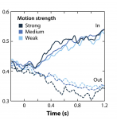
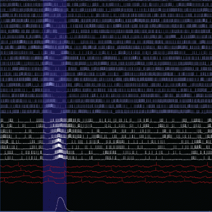
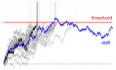

Members & their research topics

François Baccelli
baccelli@math.utexas.edu
Depts. of Mathematics and Electrical Engineering
Website · Publications
Depts. of Mathematics and Electrical Engineering
Website · Publications
François Baccelli is Simons Math+X Chair in Mathematics and ECE at UT Austin. His research directions are at the interface between Applied Mathematics (probability theory, stochastic geometry, dynamical systems) and Communications (network science, information theory, wireless networks). He is co-author of research monographs on point processes and queues (with P. Brémaud), max plus algebras and network dynamics (with G. Cohen, G. Olsder and J.P. Quadrat), stationary queuing networks (with P. Brémaud), stochastic geometry and wireless networks (with B. Blaszczyszyn).

Dana Ballard
dana@cs.utexas.edu
Dept. of Computer Science
Website · Publications


Dept. of Computer Science
Website · Publications
Dana's main research interest is in computational theories of the brain with emphasis on human vision and motor control. He is the author of two books at the intersection of computational neuroscience and artifical intelligence: Brain Computation as Hierarchical Abstraction and Computer Vision. His current research focuses on eye movements and planning during naturalistic tasks, such as driving, and making a peanut butter and jelly sandwich. He has long been a proponent of neurons performing predictive coding, explaining extra-classical receptive field properties in these terms. His current focus is modeling multiplexing of several neural processes with gamma frequency spike latencies.
Cortical spike multiplexing using gamma frequency latencies
The Poisson statistics of cortical action potentials has been seen as a basic model of signal representation and proposed as a method of communicating Bayesian statistics. However, these views are increasingly difficult to integrate with spike timing signals in the gamma frequency spectrum. Dana Ballard and Ruohan Zhang showed in simulation that the two sets of observations can be reconciled if gamma frequency action potentials can be seen as a general-purpose method of modulating fast communication in cortical networks that use phase delays as the communicated signal. This allows faster computation and much more compact representations than traditional Poisson spiking models. Poisson spike distributions can be understood as a correlate of the more basic gamma phase coding model that can mix several independent computations.
Dynamic motion planning of character animation
Although motion capture animation has become prevalent in the computer graphics industry, characters animated with this approach are only capable of the motions that have been previously recorded. The aim of this project is to address this limitation. This project provides an approach that automatically generates motion plans for character animation in novel situations.
Goal-oriented movement recording
This project was aimed at measuring and recording unrestricted, whole-body movements during a goal-oriented reaching task. Subjects in the study were instructed to locate and touch (using the right index finger) each of 12 targets arranged at fixed locations in a lab. The resulting movements reveal striking regularity in behavior across subjects, and the known locations of the goals for the task permit quantitative analysis of the Jacobian that maps from intrinsic space to goal space.
The role of reward and uncertainty in eye movements
Humans in the natural world simultaneously perform multiple tasks, each of which may rely on different information from the scene. Eye movements help gather the information, and the timing and choice of gaze targets is critical for efficiently performing tasks. Actions are chosen to maximize expected reward. Sprague et al proposed a model of gaze deployment based on the rewards and uncertainty associated with the task. We have designed a novel VR environment that allows us to vary the task rewards and the uncertainty of the information. Subjects traverse the room on a path, while contacting targets and avoiding obstacles. Location information is made more uncertain by having targets and obstacles move. By varying the task structure and the uncertainty of the environment, we can investigate the roles of intrinsic reward and uncertainty in making eye movements and acting in the world.
How does vision guide foot placement on rough terrain?
When walking over rough terrain, walkers must gather information about the layout of the upcoming path to support stable and efficient locomotion. In this context, the biomechanics of human gait define the task constraints that organize eye movements when traversing difficult terrain. However, very little is known about gaze patterns while walking outside a laboratory setting. We developed a novel experimental apparatus that records the eye movements and full-body kinematics of subjects walking over real-world terrain. For the first time, we can precisely record gaze and body movement data during natural behavior in unconstrained outdoor environments. Using this data, we hope to discover the way that humans extract information from real-world environments to facilitate safe and stable locomotion over rough and difficult terrain.
Soft barrier model for attention allocation
Foveated vision requires active allocation of gaze, particularly in scenarios where multiple tasks are being performed simultaneously. Building on previous work, we developed a probabilistic model of attention allocation that juggles uncertain state estimates across multiple tasks, and allocates gaze dynamically to reduce reward-weighted uncertainty.
Hand-eye coordination in making a PB&J sandwich
This project investigates the temporal dependencies of natural vision by measuring eye and hand movements while subjects made a sandwich.
How does memory guide attention?
Strategies of attention allocation may evolve as experience grows in daily environments. We combined immersive virtual reality and eye-tracking in this project to to characterize the development of memory representations and attention deployment in 3D environments. Freely-moving subjects performed visual search tasks in virtual reality environments. This allows us to understand the cognitive process within the context of natural behaviors.

Laura Colgin
colgin@mail.clm.utexas.edu
Dept. of Neuroscience, Center for Learning and Memory
Website · Publications

Dept. of Neuroscience, Center for Learning and Memory
Website · Publications
Laura received her PhD from the Institute for Mathematical Behavioral Sciences at UC Irvine, and she completed her postdoctoral training in the lab of Nobel Laureates Edvard and May-Britt Moser. Her research uses state-of-the-art multisite recording and multivariate analysis techniques to address several key questions in systems neuroscience, including how the hippocampus stores and retrieves memories, and how neuronal computations in the entorhinal-hippocampal network create the spatial component of these memories.
Hippocampal rhythms and neuronal coding
Why does the rhythmic state of the hippocampal network vary over time? How do neurons in the entorhinal-hippocampal network code information during different rhythmic states? The Colgin Lab employs statistical models to estimate how hippocampal rhythms depend on an animal’s prior experience or current behavior. They view distinct hippocampal rhythms as windows into different memory processing states. With this viewpoint in mind, they use Bayesian reconstruction methods to decode activity of ensembles of hippocampal neurons during different types of rhythms.

Wilson Geisler
w.geisler@utexas.edu
Dept. of Psychology, Center for Perceptual Systems
Website · Publications


Dept. of Psychology, Center for Perceptual Systems
Website · Publications
Geisler’s primary research interests are in vision, computational vision, and visual neuroscience. His research combines behavioral studies, neurophysiological studies, studies of natural stimuli, and mathematical analysis. Current research is directed at how to perform perceptual tasks optimally (the “theory of ideal observers”), on the relationship between the statistical properties of natural stimuli and the performance of the visual system, on the properties and theory of eye movements in natural tasks, and on the relationship between visual performance and the neurophysiology of the visual system.
Identification in natural scenes
How can the brain identify known signals under natural conditions where the properties of the background and the amplitude of the signal are unknown from one occasion to the next? We measure the statistical properties of natural backgrounds that are relevant for specific tasks such as object identification and then determine what neural computations would be optimal for performing those tasks. The scene statistics and optimal computations provide principled hypotheses that are tested in neural and behavioral experiments.
Understanding camouflage detection
Camouflage in nature evokes fascination and wonder. But less appreciated is the selection force that shaped them: the visual detection systems of their predators and prey. Our goal is to better understand these visual mechanisms that detect camouflage. We consider the hardest case where the camouflaging object has exactly mimicked its background luminance, contrast, colour and texture. We develop a detection model using the stimulus statistics and ideal observer theory, and compare it against the detection performance of humans in controlled psychophysical experiments. These findings can also be applied to compare different textures for camouflage, design better camouflage, and to find best or worst hiding spots.

Robbe Goris
robbe.goris@utexas.edu
Depts. of Neuroscience and Psychology, Center for Perceptual Systems
Website · Publications


Depts. of Neuroscience and Psychology, Center for Perceptual Systems
Website · Publications
Robbe Goris’ research seeks to uncover the neural basis of our visual capabilities. He uses behavioral experiments, computational theory, and monkey electrophysiology to study representation and computation in the primate visual system. Current projects in his lab are focused on the neural representation of sensory uncertainty, and on the relation between natural image statistics and cascaded computation in the visual cortex. Robbe received his Ph.D. in 2009 from KU Leuven (advisors: Johan Wagemans and Felix Wichmann), went on to do a post-doc at NYU (advisors: Tony Movshon and Eero Simoncelli), and joined UT Austin as assistant professor in Fall 2016.
Predictive vision
The brain is built to predict. It predicts the consequences of movement in the environment, the actions needed for survival, but also fundamental things such as what we will see in the coming seconds. Visual prediction is difficult because natural input evolves according to irregular, jagged temporal trajectories. We introduced the “temporal straightening” hypothesis, positing that sensory systems seek to transform their input such that neural representations follow straighter temporal trajectories. This facilitates prediction: It is easier to predict the progression of a straight line than of an irregular curve. Our hypothesis enjoys some empirical support: We found that the human visual system selectively straightens natural videos. Temporal straightening may thus be a general objective of the visual system adapted to the statistics of the natural environment. We are currently studying the neural basis of temporal straightening by characterizing neural trajectories throughout the visual processing hierarchy.
Flexible decision-making
Organisms perform perceptual tasks across a wide variety of contexts. This necessitates sensory coding strategies that seek to jointly interpret incoming sensory signals and keep track of contextual changes in the environment. Although this is a critical feature of our behavioral repertoire, we have limited insight into the neural computations underlying this flexibility. We develop computational observer models that can solve this challenge optimally and compare it’s features to behavior as well as neural representations of sensory information and task-context. Our previous work has called into question neural signatures traditionally thought to reflect decision strategy in early sensory cortex, while also discovering that stimulus expectations can strongly modulate those same neural responses. We are currently recording from neurons in both sensory and frontal association areas of the brain while animals perform dynamic decision-making tasks to investigate the neural basis of flexible decision-making.
Sensory uncertainty
Perceptual systems offer a window on the world in the face of uncertainty. Ideal perceptual systems do not ignore uncertainty, but take it into account. For example, if a sensory cue is ambiguous, prior experience should guide the interpretation of the environment. And if multiple sensory cues are available, they should be combined in proportion to their reliability. When performing perceptual tasks, observers often follow these normative predictions. This implies that neural circuits which process sensory information also survey the uncertainty of this information. How this works is a much debated question. We recently proposed a view of the visual cortex in which average response magnitude encodes stimulus features, while variability in response gain encodes the uncertainty of these features. Our work has revealed that the gain variability of neurons across the visual cortex is indeed associated with uncertainty in the features encoded by those neurons, that this behavior arises from known gain-control mechanisms, and that stimulus uncertainty can be readily decoded by downstream circuits from such a representation.
Cortical computation
The responses of visual neurons have been fruitfully studied for decades using simple artificial stimuli such as sinusoidal gratings and white noise. This tradition has uncovered a set of core-computations — linear filtering, nonlinear transduction, and response suppression – that can be expressed in fairly compact models and replicate responses of the early visual system to simple stimuli. However, for natural stimuli, these models have often failed to explain the full complexity of neural responses, and have been less successful when applied to higher visual areas. We combine the development and elaboration of such functional models with new computational techniques for stimulus selection and synthesis. Our approach will lead to new insights about the neural representation of visual information and its consequences for perception in V1 and beyond.
Neural variability
Sensory information is encoded in the activity of populations of sensory neurons: Different stimuli elicit different patterns of activity. Yet, spiking activity is not uniquely determined by external stimuli. Repeated presentations of the same stimulus also elicit different response patterns. To understand how the brain analyzes sensory information and how this process is corrupted by internal noise, we need simple mathematical models that accurately describe this variability. We develop such models and use them to examine how the brain encodes and decodes sensory information. We introduced the “Modulated Poisson model”, which describes spikes as arising from a Poisson process whose input is the product of a deterministic stimulus drive and a stochastic response gain. We found that gain fluctuations account for a large share of cortical response variability, are shared among nearby neurons, have slow temporal dynamics, and are stabilized by visual attention.
Image-computable models of neural representation
Sensory neurons represent information about the environment by discharging spikes in a stimulus-selective manner. This selectivity arises from the interplay of multiple biophysical mechanisms, typically operating within a complex hierarchy. To understand the computational significance of these operations in the primate visual system, the Goris lab builds image-computable models of neural representation. These models are simple enough to offer a meaningful understanding of the computational principles underlying functional properties of individual neurons, yet complex enough to be tested against any visual stimulus, including natural images.

Alex Huth
huth@cs.utexas.edu
Depts. of Neuroscience and Computer Science
Website · Publications
Depts. of Neuroscience and Computer Science
Website · Publications
Alex Huth's research is focused on how the many different areas in the human brain work together to perform complex tasks such as understanding natural language. Alex uses and develops computational methods in Machine Learning and Bayesian Statistics, and obtain fMRI measures of brain responses from subjects while they do real-life tasks, such as listening to a story, to better understand how the brain functions. Alex earned his PhD in Dr. Jack Gallant's laboratory through the Helen Wills Neuroscience Institute at UC Berkeley. Before that, Alex earned both his bachelor's and master's degrees in computation and neural systems (CNS) at Caltech, where he worked with Dr. Christof Koch and Dr. Melissa Saenz. He received the Burroughs Wellcome Career Award in 2016.

Dan Johnston
djohnston@mail.clm.utexas.edu
Dept. of Neuroscience
Website · Publications
Dept. of Neuroscience
Website · Publications
The Johnston lab studies the cellular and molecular mechanisms of synaptic integration and long-term plasticity of neurons in the medial temporal lobe. They have focused on the hippocampus and prefrontal cortex, areas of the brain that play important roles in learning, memory and decision-making. The research uses quantitative electrophysiological, optical-imaging, and computer-modeling techniques. Most projects involve trying to understand how dendritic ion channels, and in particular dendritic channelopathies, impact neuronal and network computations in normal and diseased brains.

Liberty Hamilton
liberty.hamilton@austin.utexas.edu
Depts. of Neurology and Communication Sciences & Disorders at Dell Medical School
Website · Publications

Depts. of Neurology and Communication Sciences & Disorders at Dell Medical School
Website · Publications
Liberty received her PhD from UC Berkeley, where she combined optogenetics and computational models to describe functional interactions in the auditory cortex. As an NRSA-funded postdoctoral fellow at UCSF, she studied speech perception using intracranial recordings. She is a co-director of the NeuroComm laboratory. Her lab investigates how the human brain processes speech and other natural sounds, and how sound representations change during development or learning. Her research uses multi-site in-vivo electrophysiological recordings in patients with epilepsy, and computational modeling, to address how low-level sound features are transformed to meaningful words and sentences. Modeling and computational techniques include linearized models and neural network models of simultaneously recorded local field potential data, unsupervised learning of neural population response structure, and software development for topics relevant to electrocorticography (e.g. electrode localization from CT and MRI scans).
Determining the functional organization of the speech cortex
To process speech, the brain must transform low-level acoustic inputs to higher order linguistic categories, such as phonemes, words, and narrative meaning. This involves being able to encode acoustic features that happen at both brief and long timescales. We applied unsupervised methods to neural recordings of people listening to naturally spoken sentences, and uncovered an organization of the auditory cortex and surrounding areas into two spatially and functionally distinct modules. They are now applying similar methods to look at changes in functional organization during brain development in children with epilepsy. They also apply computational models to analyze which particular sound features are represented in the brain, and how areas functionally interact during natural speech perception and production.

Kristen Harris
kharris@mail.clm.utexas.edu
Dept. of Neuroscience, Center for Learning and Memory
Website · Publications

Dept. of Neuroscience, Center for Learning and Memory
Website · Publications
Dr. Harris earned her M.S. from the University of Illinois and her Ph.D. from Northeastern Ohio University's College of Medicine, and she did her postdoctoral training at Massachusetts General Hospital. She then served on the faculty of the Harvard Medical School, Boston University, and the Medical College of Georgia, where she was Director of the Synapses and Cognitive Neuroscience Center and a Georgia Research Alliance Eminent Scholar. She has served as Councilor for the Society for Neuroscience, several NIH study sections, and external advisory boards (Northwestern University, Max Planck Institute for Brain Research in Frankfurt, Janelia Farms). She has served on several editorial boards: Journal of Comparative Neurology, Hippocampus, Neuroinformatics, Brain Cell Biology, and Frontiers in Neuroanatomy. She has had more than 30 years of continuous NIH grant support and is a recipient of Javits Merit Award from NINDS and Scientific Innovations Award from the Brain Research Foundation.
In pursuit of synapse structure and function
The Harris lab investigates the structural basis of learning and memory, synapse development, and the ultrastructure of synaptic plasticity using in vivo and in vitro preparations, hippocampal slice physiology, serial section transmission electron microscopy, and 3D reconstruction.
The lab studies structural synaptic plasticity in the developing and mature nervous system. Her group has been among the first to develop computer-assisted approaches to analyze synapses in 3D through serial section electron microscopy (3DEM) under a variety of experimental and natural conditions. These techniques have led to new understanding of synaptic structure under normal conditions as well as in response to experimental conditions such as long-term potentiation, a cellular mechanism of learning and memory. The body of work includes novel information about how subcellular components are redistributed specifically to those synapses that are undergoing plasticity during learning and memory, brain development, and pathological conditions including epilepsy. Theoretical and computational methods include computational vision for 3DEM reconstruction, high-dimensional spline methods, and molecular simulations of neurotransmitter signaling across the synaptic cleft.
The lab studies structural synaptic plasticity in the developing and mature nervous system. Her group has been among the first to develop computer-assisted approaches to analyze synapses in 3D through serial section electron microscopy (3DEM) under a variety of experimental and natural conditions. These techniques have led to new understanding of synaptic structure under normal conditions as well as in response to experimental conditions such as long-term potentiation, a cellular mechanism of learning and memory. The body of work includes novel information about how subcellular components are redistributed specifically to those synapses that are undergoing plasticity during learning and memory, brain development, and pathological conditions including epilepsy. Theoretical and computational methods include computational vision for 3DEM reconstruction, high-dimensional spline methods, and molecular simulations of neurotransmitter signaling across the synaptic cleft.

Alex Huk
huk@utexas.edu
Depts. of Neuroscience and Psychology, Center for Perceptual Systems
Website · Publications
Depts. of Neuroscience and Psychology, Center for Perceptual Systems
Website · Publications
Alex received his PhD from Stanford University (with David Heeger) and did postdoctoral research at the University of Washington (with Mike Shadlen and John Palmer). His research studies how perception, decision-making, working memory, and action function during both well-controlled lab tasks as well as during conditions of more natural sensory inputs and behaviors.
The Huk lab focuses on visual motion, using it as a model system for investigating how the brain integrates information over space and time. They employ use single-unit and multi-unit electrophysiology, causal perturbations of neural activity, psychophysics, and computational modeling. Recent work has focused on applications of generalized linear models and other single-trial amenable analytic frameworks, to dissect the multitude of sensory, cognitive, and motor factors that drive many of the brain areas often studied in primates. Ongoing projects seek to extend applications of these tools to large-scale neurophysiological recordings, as well as more mechanistic studies of individual neurons and small circuits.

Statistical and causal inquiry into the neural code
How do neurons represent aspects of the environment, and how can such signals be used to make inferences to inform decisions and guide actions? This research involves building statistical models of the neural responses, complemented by causal perturbations of neural activity. Broadly, this is an empirical approach towards understanding the neural code in cortex, i.e., what do action potentials and spike trains mean, given their location in the circuit and within a particular behavioral context?

Mike Mauk
mauk@utexas.edu
Dept. of Neuroscience, Center for Learning and Memory
Website · Publications
Dept. of Neuroscience, Center for Learning and Memory
Website · Publications
The Mauk lab studies information processing and learning in the cerebellum. They study what the cerebellum computes and how, using behavioral analysis, in vivo recordings, stimulation and inactivation, and large-scale computer simulations and mathematical models. Big questions include how inputs are transformed to improve learning and to implement stimulus-temporal coding required for the well-timed learning that the cerebellum mediates. They also study the role of feedback in neural system function and in neural/system adaptations that make learning more efficient and noise-resilient. Experimental methods involve the use of eyelid conditioning as a way to control cerebellar inputs and monitor cerebellar output in vivo. Large-scale simulations involve building conductance-based spiking representations of each cerebellar cell type, developing algorithms to interconnect these neurons in ways that represent cerebellar synaptic organization, and testing them using inputs derived from empirical studies. Current versions involve over one million neurons implemented on GPU-based workstations.

Neural processing of noisy inputs
Neurons are inherently noisy. This means the inputs to each neural system are made somewhat ambiguous or unreliable because of neural noise. What sorts of adaptations exist in neural system to cope with and improve performance in the face of noisy and unreliable inputs? Large-scale computer simulations of the cerebellum are used to investigate these questions in the cerebellum, a brain system well-enough understood to address such advanced questions. Recent discoveries point to highly adaptive processes implemented by the cerebellum to ensure that noisy inputs do not translate into non-adaptive outputs. These mechanisms involve feedback, a ubiquitous aspect of neural architectures that is poorly understood.

Risto Miikkulainen
risto@cs.utexas.edu
Dept. of Computer Science
Website · Publications


Dept. of Computer Science
Website · Publications
Risto Miikkulainen is a professor of Computer Science, and AVP of Evolutionary Intelligence at Cognizant Technology Solutions. He received an M.S. in Engineering from the Helsinki University of Technology (now Aalto University), and a Ph.D. in Computer Science from UCLA. His current research focuses on methods and applications of neuroevolution, as well as neural network models of natural language processing and vision; he is an author of over 450 articles in these research areas. Risto's lab studies how cognitive abilities, such as sentence and story processing, lexicon, episodic memory, pattern and object recognition, and sequential decision making, emerge through evolution and learning. They develop new methods for self-organization and evolution of neural networks, and verify them experimentally on human subjects, often in collaboration with experimentalists and medical professionals. Current work includes understanding and inferring the semantics of words and sentences in fMRI images, impaired story-telling in schizophrenia, rehabilitation in bilingual aphasia, and evolution of communication in simulated agents.
Evolutionary computation
This is a biologically inspired machine learning method that aims to solve (or optimize) complex problems by performing an intelligent parallel search in the solution space. Our research in this area focuses primarily on evolving neural networks, or neuroevolution, but also includes work in theory, estimation of distribution algorithms, and particle swarming. Applications include control, robotics, resource optimization, game playing, and artificial life.
Cognitive science
Cognitive science attempts to build computational models of human (and animal) cognitive processes in order to improve our understanding of natural intelligent systems. Such an understanding then forms a foundation for developing more intelligent artificial systems. Our work focuses on subsymbolic (neural network) models of language, memory, perception, and concept and schema learning, with a particular emphasis on understanding the breakdown of these processes in various disorders.
Computational neuroscience
A computational model is a complete description of how a neural system functions, and in that sense the ultimate specification of neuroscience theory. The models are constrained by and validated with existing experimental data, and then used to generate predictions for further biological experiments. Our work in this area focuses on understanding the visual cortex, episodic and associative memory, language, and various brain disorders. Much of the research involves collaborations with neuroscientists and modeling behavioral, recordings, and imaging data.
Applications
Much of our work on applications involves neuroevolution of behavior in real-world domains such as control, robotics, game playing, and artificial life, but also design and optimization of wavelets, sorting networks, musical score, proofs, and resource allocations. Other areas include reinforcement learning in robotics, packet routing, and satellite communication, unsupervised learning for pattern recognition and visualization, and supervised learning for applicant evaluation, intrusion detection, and process control.

Franco Pestilli
pestilli@utexas.edu
Dept. of Psychology, Center for Perceptual Systems
Website · Publications


Dept. of Psychology, Center for Perceptual Systems
Website · Publications
Dr. Pestilli is an Associate Professor in the Department of Psychology at the University of Texas, Austin. He holds a Ph.D. from New York University and a B.A. from the University of Rome La Sapienza, and received postdoctoral training at Stanford University and Columbia University. Dr. Pestilli is a Fellow of the Association for Psychological Science and Psychonomics Society. He received a Microsoft Faculty Fellowship, the Early Career Janet Taylor Spence Award by the Association for Psychological Science. He is an editorial board member for Scientific Data, Neural Networks and Scientific Reports and director of the Advanced Computational Neuroscience Network and brainlife.io.
Understanding perception and cognition across the lifespan
We often think about behavior in terms of what is happening in the present, events such as reading a news piece, driving a car or catching a football in mid-air. But other dimensions of behavior extend over weeks, months, and years. Examples include a child learning how to read; an athlete recovering from a concussion; an aging adult losing visual ability. The processes and systems in the brain needed to respond to fast events in the present are different than those needed in response to slower and longer processes. We are interested in understanding how the long-range connections between brain areas support both short-term perception and cognition as well as long-term behaviors.
Brainlife.io: accelerating discovery via technology
Brainlife.io is an open, free and secure cloud platform to support scientific transparency and reproducibility. Brainlife.io promotes engagement and education in reproducible neuroscience by providing an online, community-based platform where users can publish code, apps and data. The platform connects researchers with high-performance computing clusters and cloud resources.
Computational modeling of the visual white matter in health and disease
Visual and eye diseases can have profound effects on the brain. The effect of the reduction of inputs to the visual system is often underestimated. We use computational modeling and machine-learning methods to study the changes to the network of brain connections between visual areas in healthy subjects, and as result of eye and visual disease.

Nicholas Priebe
nico@austin.utexas.edu
Dept. of Neuroscience, Center for Learning and Memory
Website · Publications

Dept. of Neuroscience, Center for Learning and Memory
Website · Publications
Nicholas Priebe did his PhD in Physiology from UCSF, studying adaptation in motion-selective neurons, and his postdoctoral with David Ferster at Northwestern University, studying the mechanisms underlying neuronal responses in primary vusual cortex. The massive expansion of cerebral cortex is a hallmark of the human brain. We know that the cortex plays an essential role in our perceptions and actions. Sensory inputs from the periphery are transformed in the cortex, allowing us to generate appropriate motor outputs. Dr. Priebe's lab studies the cortical circuitry and computations underlying such transformations, using vision as a model system. In visual cortex, neuronal circuitry computes motion, orientation and depth from subcortical inputs. By understanding the circuitry that underlies such computations, we gain insight into similar computations that occur throughout cortex.
Understanding the visual brain
Our work centers on understanding the processes that shape our visual representation of the world. How is it that an overabundance of external sensory information is altered into an effective representation of the world around us? The visual information we receive is systematically transformed along this pathway, from the periphery to cortex. To better understand this process, we study the mechanisms that contribute to neuronal responses in the primary sensory cortex. To accomplish this, we use a combination of techniques including optogenetics, electrophysiology, in vivo two photon calcium imaging, and behavioral training.

David Soloveichik
david.soloveichik@utexas.edu
Depts. of Electrical and Computer Engineering
Website · Publications


Depts. of Electrical and Computer Engineering
Website · Publications
David received his undergraduate and Masters degree from Harvard University in Computer Science, and his PhD in Computation and Neural Systems at the California Institute of Technology. He was a Fellow at the Center for Systems and Synthetic Biology at UCSF before he joined Texas ECE. David's main area of interest is 'molecular programming': designing and building molecular systems in which computing and decision-making is carried out by the chemical processes themselves. In particular, he studies underlying theoretical connections between distributed computing and molecular information processing. He is also interested in understanding how neural networks can execute distributed computing algorithms.
Natural computing: models of computing inspired by nature
Computation is not a man-made phenomenon. From our brains to the regulatory networks of bacteria, nature provides fascinating examples of information processing, which is quite different from electronic computers.
Distributed computing
Formal models of distributed computing help us to discover the potential and limits of chemical information processing. We study models inspired by self-assembly and chemical reaction networks.
Molecular programming: engineering smart molecules
Using nucleic-acid "strand displacement cascades" we build molecular interactions for synthetic biology, nanotechnology, and bioengineering in our wet-lab. We use chemistry as a "programming language".

Thibaud Taillefumier
ttaillef@austin.utexas.edu
Depts. of Neuroscience and Mathematics
Website · Publications


Depts. of Neuroscience and Mathematics
Website · Publications
Originally trained in mathematical physics, Thibaud completed his PhD in Biophysics under the supervision of Marcelo Magnasco at The Rockefeller University, where he developed novel analytical and computational techniques to characterize different modalities of neural coding, and performed electrophysiological recordings. As an associate research scholar at Princeton, he expanded his work on neural assemblies within the framework of stochastic dynamics and non-equilibrium thermodynamics with Prof. Curtis G. Callan, Jr. In parallel, he studied bacterial communities from the perspective of information and optimization theory with Prof. Ned S. Wingreen.
Synchrony in stochastic spiking neural networks
Neural systems propagate information via neuronal networks that transform sensory input into distributed spiking patterns, and dynamically process these patterns to generate behaviorally relevant responses. The presence of noise at every stage of neural processing imposes serious limitation on the coding strategies of these networks. In particular, coding information via spike timings, which presumably achieves the highest information transmission rate, requires neural assemblies to exhibit high level of synchrony. Thibaud Taillefumier and collaborators are interested in understanding how synchronous activity emerges in modeled populations of spiking neurons, focusing on the interplay between driving inputs and network structure. Their approach relies on methods from Markov chain, point processes, and diffusion processes theories, in combination with exact event-driven simulation techniques. The ultimate goal is two-fold: 1) to identify the input/structure relations that optimize information transmission capabilities and 2) to characterize the “physical signature’’ of such putative optimal tunings in recorded spiking activity.

Stochastic neural dynamics
How can neural networks reliably process information in spite of biological noise? Can the same neural assemblies exhibit different coding strategies? How do network structure and input drive combine to explain the adoption of a given coding strategy? More fundamentally, can a meaningful neural computation be distinguished from spontaneous (perhaps irrelevant) neural activity? In other words, do neural computations have a physical, observable signature?
Neural coding and collective dynamics
The elementary computations of neural networks are understood on a physical and a chemical level. In the brain, neural networks process information by propagating all-or-none action potentials that are converted probabilistically at synapses between neurons. By contrast, the nature of neural computation at the network level -- where thoughts are believed to emerge -- remains largely mysterious. Do action potentials only “make sense” in the context of collective spiking patterns? Which spatiotemporal patterns constitute a “meaningful computation”? What neural codes make these computations possible in spite of biological noise?

Ngoc Mai Tran
ntran@math.utexas.edu
Dept. of Mathematics
Website · Publications

Dept. of Mathematics
Website · Publications
Ngoc's interests lie in probabilistic and combinatorial questions arising from tropical geometry and neuroscience. Some of her recent works are on decoding grid cells, commuting tropical matrices, and zeros of random tropical polynomials. After a stint as a W-2 Professor at the University of Bonn, Germany 2015-2017, Ngoc joined as an Assistant Professor in the Department of Mathematics of UT Austin from the summer of 2017.
Is the brain optimal? How does it cope with noise?
The brain is a computation machine, capable of encoding, storing and retrieving information. At the same time, the brain is made up of noisy neurons, and this adversely affects its performance. How does the brain cope with noise? How do neurons encode information? How optimal is the neural code from an information theoretic perspective? Answering these questions will help us better understand the brain, and potentially uncover new roles for neurons seen in experiments. Currently Ngoc is working on these questions for grid cells. In mammals, grid cells encode the animal’s two-dimensional location with a set of periodic spatial firing pattern of different periods. Dubbed as the brain's 'inner GPS', their discovery led to the 2014 Nobel prize in medicine. However, grid cells’ theoretical performance is extremely sensitive to noise. In a recent work, Ila Fiete and Ngoc Tran have built a biologically plausible grid cell decoder with optimal performance.

Xue-Xin Wei
weixx@utexas.edu
Dept. of Neuroscience
Website · Publications


Dept. of Neuroscience
Website · Publications
Xue-Xin Wei (位学鑫) grew up in Qingdao (or Tsingtao, known for Tsingtao Beer), China. After obtaining a Bachelor degree in mathematics at Peking University, he became fascinated by the inner workings of the brain. He moved to UPenn for a psychology PhD, and received the Louis B. Flexner Award for outstanding thesis work. He then worked as a postdoctoral researcher at the Center for Theoretical Neuroscience & Department of Statistics at Columbia University. Following this, he joined the Department of Neuroscience at UT Austin.
Optimization-based recurrent neural network (RNN) models for understanding the neural basis of cognition
We have been developing a computational modeling approach to study cognitive processing by using optimization of recurrent neural networks. Applications of this approach have revealed insights into the principles of information processing underlying spatial navigation (Cueva & Wei, ICLR, 2018; Cueva et al., ICLR, 2020). One current focus is working memory. Another focus is grid cells and place cell in the navigation circuits.
Developing novel neural data analysis methods
We develop sophisticated statistical models to analyze large-scale neural data, in particular electro-physiological recording and calcium imaging (Wei, Zhou et al., NBDT journal, 2020; Zhou & Wei, NeurIPS, 2020). We are particularly interested in developing efficient and flexible methods that can capture the single-trial dynamics of the neural states.
Efficient neural coding
We construct computational models/theories based on efficient coding hypothesis [HB Barlow, 1961] that can account for experimental observations in neurophysiology. This leads to insights into how the brain encodes information in both sensory and cognitive brain areas (Wei & Stocker, Neural Computation, 2016; Wei, Prentice, Balasubramanian, eLife, 2015; Wang, Wei et al., NeurIPS 2016).
Normative behavior models for perception and working memory
We have developed an integrated framework for understanding perception that unifies two prominent hypothesis in neuroscience, namely efficient coding and Bayesian inference (Wei & Stocker, Nature Neuroscience, 2015; Wei & Stocker, PNAS, 2017).
Computational models of sensory adaptation
Ongoing work aiming to understand how the neural response properties in sensory cortex adapt to the structure of the stimulus inputs (e.g., Wei & Miller, VSS 2019).